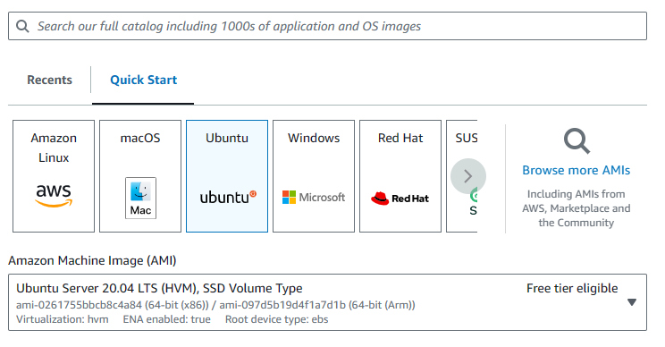

Tutorial
Step 1:
Setting Up
Start by creating an EC2 server on AWS by pressing the EC2 button on the home screen. Then, go to the Instances (running) page and select the orange "Launch Instances" button in the right corner of the page.
Step 2:
Start the Instance
Once you press the "Launch Instances" button, you will open a page with several different settings for your page.
Here, you should change the OS to Ubuntu. Select Unbuntu Server 20.04 as the Amazon Machine Image.
Under Key pair, you are able to add a key pair to your server. However, for the sake of this assignment, select "Proceed without a key pair".
Under configuration, change 1x 8 to 1x 28.
From there you can select the "Launch Instance" button on the bottom of the page.
Step 3:
Security Codes
After the instance is launched, go to the Instances page and select your newly created Instance. Scroll down and select the Security button. From there, select the launch wizard button under the Security groups heading. Go into the inbound rules section and press Edit Inbound Rules. Add two new rules by pressing the add rule button and change the port range on both. One should be 8080, and the other should be 1234. Both rules should be set to the source Anywhere-IPV4. From there you can press Save Rules and return to the Instance page.
Step 4:
HTTP Set Up
After setting up your security codes, you can go to your instance summary and select the connect button. From there, you will open your Instance and can now write commands into it directly.
- Here are the list of commands to put in to set up your HTTP server prior to cloning your GitHub Repo, as well as the results for each.
- Mongo DB: curl -s https://gist.githubusercontent.com/tejaswigowda/f289e9bff13d152876e8d4b3281142f8/raw/df37df2e16a3166e686357a045751a7c18bbeebe/installNodeMongoUbuntu16.04.sh | bash
- npm install
- npm install latest
- sudo npm install -g n
- sudo npm install -g http-server
From here, you can now clone your GitHub repo by writing git clone and then the link
Step 5:
Starting the Server
After cloning your repo, use the ls and cd commands to navigate to your server.js file.
Once you reach the js file's location, you can write node server.js to start running the server.
To view your server, you can write the public ip with :8080 to view your webpage.
Step 6:
Arduino code
Now, to make the watch work, you'll open the DHT11Default in Arduino. Before uploading the file onto the watch, make sure that the board is set up to TTGO T-Watch and that your port is correctly connected to the watch. Prior to running the code, also make sure that the watch is connected to the computer via a USB cord and has the temperature sensor connected to it. The sensor has a blue light that will light up when connected.

Once the watch and ports are fully set up, you can go into the code and change the hotspot name and password to the one that your hotspot is set up with. You'll then want to change the URL to your public IP address.
Make sure to change your pin to 25.
You can now finally upload your code onto the watch, and you should get this result on the physical watch and on the webpage: